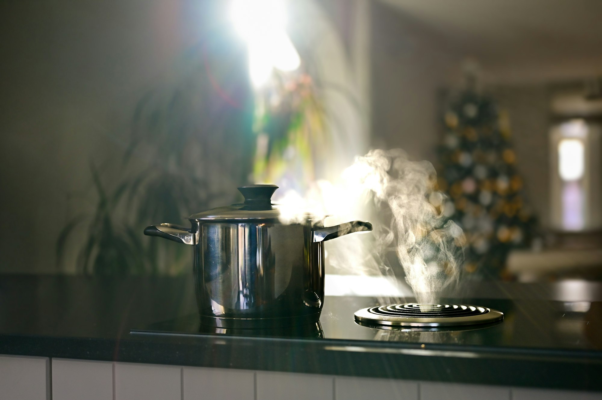

How to find a tab you lost in Chrome
Short answer
Press Ctrl+Shift+A (⌘+Shift+A on a Mac) to search every open tab by its title or address. If you closed it, press Ctrl+Shift+T (⌘+Shift+T) to reopen it, or search your history with Ctrl+H (⌘+Y on a Mac). With Simmer, type sm and a space in the address bar to search open tabs, saved tabs and bookmarks at once.

Search the tabs you have open
Chrome's tab search lists every open tab in every window. Press Ctrl+Shift+A (⌘+Shift+A on a Mac), or click the arrow at the end of the tab strip, and start typing. It matches titles and addresses, and pressing Enter switches to the tab, even in another window. It also lists tabs you closed recently.
Search from the address bar
Type @tabs and a space in the address bar, then a word from the page. Chrome lists matching open tabs and switches to the one you pick. The same works with @history for pages you've visited and @bookmarks for pages you've saved.
Find a tab you closed
- Just now. Press Ctrl+Shift+T (⌘+Shift+T on a Mac). Press it again to go further back. A closed window comes back with all its tabs.
- Earlier today. Open the History menu, where Recently closed lists tabs and windows.
- Days ago. Press Ctrl+H (⌘+Y on a Mac) and search your history by a word from the title.
Find a tab you saved for later
History finds single pages, but not the other tabs that went with them. If you put a task on Simmer's back burner, it is kept whole. Type sm and a space in the address bar, then a word, and Simmer searches your open tabs, the tabs it saved and your bookmarks together. Pick a saved tab and it comes back. You can search the same way from the side panel, and press Bring back to reopen the whole task.
Lose fewer tabs
Tabs get lost because the strip is long. Simmer keeps it short: it sorts your tabs into the things you're in the middle of, and puts the ones you aren't working on away until you need them. For the reasons tabs pile up, see too many tabs open in Chrome.
Questions
- What is the shortcut to search tabs in Chrome?
- Ctrl+Shift+A on Windows, Linux and ChromeOS, and ⌘+Shift+A on a Mac. It opens tab search, which lists every open tab and tabs you closed recently.
- How do I find a tab I closed hours ago?
- Open History with Ctrl+H (⌘+Y on a Mac) and search for a word from the page's title. For tabs closed in the last few minutes, Ctrl+Shift+T (⌘+Shift+T) reopens them one at a time.
- Can I search the tabs Simmer has put away?
- Yes. Type sm and a space in Chrome's address bar, or use the search in Simmer's side panel. Both search open tabs, saved tabs and bookmarks.